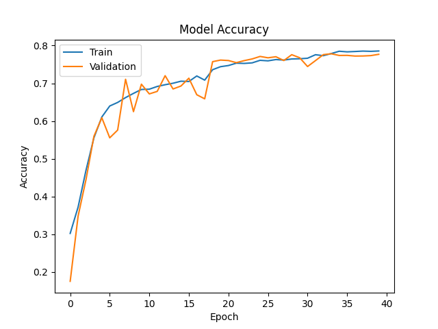
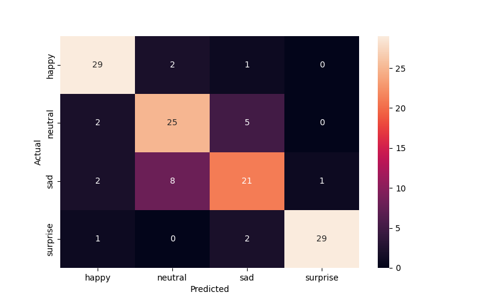

        <html>
        <head><title>Model Summary - 2024-04-10 13:59:48</title></head>
        <body>
        <h1>Model Configuration</h1>
        <pre>model:
  compile:
    learning_rate: 0.01
    optimizer: RMSprop
    optimizer_name: adam
  data:
    color_layers: 1
    color_mode: grayscale
    img_height: 48
    img_width: 48
    use_data_loaders: true
  layers:
  - filters: 64
    kernel_size:
    - 2
    - 2
    padding: same
    type: Conv2D
  - type: BatchNormalization
  - alpha: 0.1
    type: LeakyReLU
  - pool_size:
    - 2
    - 2
    type: MaxPooling2D
  - filters: 128
    kernel_size:
    - 2
    - 2
    padding: same
    type: Conv2D
  - type: BatchNormalization
  - alpha: 0.1
    type: LeakyReLU
  - pool_size:
    - 2
    - 2
    type: MaxPooling2D
  - filters: 256
    kernel_size:
    - 2
    - 2
    padding: same
    type: Conv2D
  - type: BatchNormalization
  - alpha: 0.1
    type: LeakyReLU
  - pool_size:
    - 2
    - 2
    type: MaxPooling2D
  - filters: 512
    kernel_size:
    - 2
    - 2
    padding: same
    type: Conv2D
  - type: BatchNormalization
  - alpha: 0.1
    type: LeakyReLU
  - pool_size:
    - 2
    - 2
    type: MaxPooling2D
  - filters: 128
    kernel_size:
    - 2
    - 2
    padding: same
    type: Conv2D
  - type: BatchNormalization
  - alpha: 0.1
    type: LeakyReLU
  - pool_size:
    - 2
    - 2
    type: MaxPooling2D
  - type: Flatten
  - activation: relu
    type: Dense
    units: 512
  - activation: relu
    type: Dense
    units: 128
  - type: Dense
    units: 64
  - type: BatchNormalization
  - type: ReLU
  - activation: softmax
    type: Dense
    units: 4
  train:
    batch_size: 64
    epochs: 40
    patience: 7
</pre>
        <h1>Model Summary</h1>
        <pre>Model: "sequential"
┏━━━━━━━━━━━━━━━━━━━━━━━━━━━━━━━━━━━━━━┳━━━━━━━━━━━━━━━━━━━━━━━━━━━━━┳━━━━━━━━━━━━━━━━━┓
┃ Layer (type)                         ┃ Output Shape                ┃         Param # ┃
┡━━━━━━━━━━━━━━━━━━━━━━━━━━━━━━━━━━━━━━╇━━━━━━━━━━━━━━━━━━━━━━━━━━━━━╇━━━━━━━━━━━━━━━━━┩
│ conv2d (Conv2D)                      │ (None, 48, 48, 64)          │             320 │
├──────────────────────────────────────┼─────────────────────────────┼─────────────────┤
│ batch_normalization                  │ (None, 48, 48, 64)          │             256 │
│ (BatchNormalization)                 │                             │                 │
├──────────────────────────────────────┼─────────────────────────────┼─────────────────┤
│ leaky_re_lu (LeakyReLU)              │ (None, 48, 48, 64)          │               0 │
├──────────────────────────────────────┼─────────────────────────────┼─────────────────┤
│ max_pooling2d (MaxPooling2D)         │ (None, 24, 24, 64)          │               0 │
├──────────────────────────────────────┼─────────────────────────────┼─────────────────┤
│ conv2d_1 (Conv2D)                    │ (None, 24, 24, 128)         │          32,896 │
├──────────────────────────────────────┼─────────────────────────────┼─────────────────┤
│ batch_normalization_1                │ (None, 24, 24, 128)         │             512 │
│ (BatchNormalization)                 │                             │                 │
├──────────────────────────────────────┼─────────────────────────────┼─────────────────┤
│ leaky_re_lu_1 (LeakyReLU)            │ (None, 24, 24, 128)         │               0 │
├──────────────────────────────────────┼─────────────────────────────┼─────────────────┤
│ max_pooling2d_1 (MaxPooling2D)       │ (None, 12, 12, 128)         │               0 │
├──────────────────────────────────────┼─────────────────────────────┼─────────────────┤
│ conv2d_2 (Conv2D)                    │ (None, 12, 12, 256)         │         131,328 │
├──────────────────────────────────────┼─────────────────────────────┼─────────────────┤
│ batch_normalization_2                │ (None, 12, 12, 256)         │           1,024 │
│ (BatchNormalization)                 │                             │                 │
├──────────────────────────────────────┼─────────────────────────────┼─────────────────┤
│ leaky_re_lu_2 (LeakyReLU)            │ (None, 12, 12, 256)         │               0 │
├──────────────────────────────────────┼─────────────────────────────┼─────────────────┤
│ max_pooling2d_2 (MaxPooling2D)       │ (None, 6, 6, 256)           │               0 │
├──────────────────────────────────────┼─────────────────────────────┼─────────────────┤
│ conv2d_3 (Conv2D)                    │ (None, 6, 6, 512)           │         524,800 │
├──────────────────────────────────────┼─────────────────────────────┼─────────────────┤
│ batch_normalization_3                │ (None, 6, 6, 512)           │           2,048 │
│ (BatchNormalization)                 │                             │                 │
├──────────────────────────────────────┼─────────────────────────────┼─────────────────┤
│ leaky_re_lu_3 (LeakyReLU)            │ (None, 6, 6, 512)           │               0 │
├──────────────────────────────────────┼─────────────────────────────┼─────────────────┤
│ max_pooling2d_3 (MaxPooling2D)       │ (None, 3, 3, 512)           │               0 │
├──────────────────────────────────────┼─────────────────────────────┼─────────────────┤
│ conv2d_4 (Conv2D)                    │ (None, 3, 3, 128)           │         262,272 │
├──────────────────────────────────────┼─────────────────────────────┼─────────────────┤
│ batch_normalization_4                │ (None, 3, 3, 128)           │             512 │
│ (BatchNormalization)                 │                             │                 │
├──────────────────────────────────────┼─────────────────────────────┼─────────────────┤
│ leaky_re_lu_4 (LeakyReLU)            │ (None, 3, 3, 128)           │               0 │
├──────────────────────────────────────┼─────────────────────────────┼─────────────────┤
│ max_pooling2d_4 (MaxPooling2D)       │ (None, 1, 1, 128)           │               0 │
├──────────────────────────────────────┼─────────────────────────────┼─────────────────┤
│ flatten (Flatten)                    │ (None, 128)                 │               0 │
├──────────────────────────────────────┼─────────────────────────────┼─────────────────┤
│ dense (Dense)                        │ (None, 512)                 │          66,048 │
├──────────────────────────────────────┼─────────────────────────────┼─────────────────┤
│ dense_1 (Dense)                      │ (None, 128)                 │          65,664 │
├──────────────────────────────────────┼─────────────────────────────┼─────────────────┤
│ dense_2 (Dense)                      │ (None, 64)                  │           8,256 │
├──────────────────────────────────────┼─────────────────────────────┼─────────────────┤
│ batch_normalization_5                │ (None, 64)                  │             256 │
│ (BatchNormalization)                 │                             │                 │
├──────────────────────────────────────┼─────────────────────────────┼─────────────────┤
│ re_lu (ReLU)                         │ (None, 64)                  │               0 │
├──────────────────────────────────────┼─────────────────────────────┼─────────────────┤
│ dense_3 (Dense)                      │ (None, 4)                   │             260 │
└──────────────────────────────────────┴─────────────────────────────┴─────────────────┘
 Total params: 1,096,452 (4.18 MB)
 Trainable params: 1,094,148 (4.17 MB)
 Non-trainable params: 2,304 (9.00 KB)
</pre>
        <h2>Test Accuracy</h2>
        <p>
1/2 ━━━━━━━━━━━━━━━━━━━━ 0s 21ms/step - accuracy: 0.8438 - loss: 0.4340
2/2 ━━━━━━━━━━━━━━━━━━━━ 0s 8ms/step - accuracy: 0.8229 - loss: 0.4874 

1/2 ━━━━━━━━━━━━━━━━━━━━ 0s 400ms/step
2/2 ━━━━━━━━━━━━━━━━━━━━ 0s 2ms/step  
</p>
        <h2>Accuracy Plot</h2>
        
        <h2>Classification Report</h2>
        <pre>              precision    recall  f1-score   support

       happy       0.85      0.91      0.88        32
     neutral       0.71      0.78      0.75        32
         sad       0.72      0.66      0.69        32
    surprise       0.97      0.91      0.94        32

    accuracy                           0.81       128
   macro avg       0.81      0.81      0.81       128
weighted avg       0.81      0.81      0.81       128

</pre>
        <h2>History</h2>
        <pre>Epoch 1: accuracy: 0.3023, loss: 1.3695, val_accuracy: 0.1754, val_loss: 1.4179, learning_rate: 0.0100
Epoch 2: accuracy: 0.3720, loss: 1.2348, val_accuracy: 0.3480, val_loss: 1.2739, learning_rate: 0.0100
Epoch 3: accuracy: 0.4696, loss: 1.1383, val_accuracy: 0.4450, val_loss: 1.4534, learning_rate: 0.0100
Epoch 4: accuracy: 0.5556, loss: 1.0027, val_accuracy: 0.5596, val_loss: 1.0341, learning_rate: 0.0100
Epoch 5: accuracy: 0.6107, loss: 0.9168, val_accuracy: 0.6086, val_loss: 0.9960, learning_rate: 0.0100
Epoch 6: accuracy: 0.6398, loss: 0.8681, val_accuracy: 0.5556, val_loss: 1.1278, learning_rate: 0.0100
Epoch 7: accuracy: 0.6493, loss: 0.8415, val_accuracy: 0.5760, val_loss: 1.0126, learning_rate: 0.0100
Epoch 8: accuracy: 0.6621, loss: 0.8055, val_accuracy: 0.7107, val_loss: 0.6980, learning_rate: 0.0100
Epoch 9: accuracy: 0.6732, loss: 0.7872, val_accuracy: 0.6249, val_loss: 1.0039, learning_rate: 0.0100
Epoch 10: accuracy: 0.6836, loss: 0.7738, val_accuracy: 0.6976, val_loss: 0.7721, learning_rate: 0.0100
Epoch 11: accuracy: 0.6844, loss: 0.7628, val_accuracy: 0.6719, val_loss: 0.8122, learning_rate: 0.0100
Epoch 12: accuracy: 0.6916, loss: 0.7544, val_accuracy: 0.6785, val_loss: 0.8079, learning_rate: 0.0100
Epoch 13: accuracy: 0.6962, loss: 0.7350, val_accuracy: 0.7201, val_loss: 0.6906, learning_rate: 0.0100
Epoch 14: accuracy: 0.7002, loss: 0.7292, val_accuracy: 0.6850, val_loss: 0.7905, learning_rate: 0.0100
Epoch 15: accuracy: 0.7055, loss: 0.7175, val_accuracy: 0.6928, val_loss: 0.7145, learning_rate: 0.0100
Epoch 16: accuracy: 0.7047, loss: 0.7143, val_accuracy: 0.7135, val_loss: 0.6931, learning_rate: 0.0100
Epoch 17: accuracy: 0.7194, loss: 0.7000, val_accuracy: 0.6697, val_loss: 0.7946, learning_rate: 0.0100
Epoch 18: accuracy: 0.7084, loss: 0.7122, val_accuracy: 0.6588, val_loss: 0.8816, learning_rate: 0.0100
Epoch 19: accuracy: 0.7360, loss: 0.6484, val_accuracy: 0.7573, val_loss: 0.6163, learning_rate: 0.0020
Epoch 20: accuracy: 0.7440, loss: 0.6394, val_accuracy: 0.7615, val_loss: 0.5975, learning_rate: 0.0020
Epoch 21: accuracy: 0.7470, loss: 0.6294, val_accuracy: 0.7603, val_loss: 0.6090, learning_rate: 0.0020
Epoch 22: accuracy: 0.7533, loss: 0.6134, val_accuracy: 0.7547, val_loss: 0.6006, learning_rate: 0.0020
Epoch 23: accuracy: 0.7527, loss: 0.6075, val_accuracy: 0.7601, val_loss: 0.5948, learning_rate: 0.0020
Epoch 24: accuracy: 0.7541, loss: 0.6177, val_accuracy: 0.7645, val_loss: 0.5859, learning_rate: 0.0020
Epoch 25: accuracy: 0.7609, loss: 0.6005, val_accuracy: 0.7711, val_loss: 0.5864, learning_rate: 0.0020
Epoch 26: accuracy: 0.7595, loss: 0.6002, val_accuracy: 0.7675, val_loss: 0.5892, learning_rate: 0.0020
Epoch 27: accuracy: 0.7629, loss: 0.5954, val_accuracy: 0.7703, val_loss: 0.5753, learning_rate: 0.0020
Epoch 28: accuracy: 0.7615, loss: 0.5866, val_accuracy: 0.7603, val_loss: 0.5975, learning_rate: 0.0020
Epoch 29: accuracy: 0.7644, loss: 0.5838, val_accuracy: 0.7758, val_loss: 0.5758, learning_rate: 0.0020
Epoch 30: accuracy: 0.7650, loss: 0.5795, val_accuracy: 0.7677, val_loss: 0.5868, learning_rate: 0.0020
Epoch 31: accuracy: 0.7664, loss: 0.5746, val_accuracy: 0.7444, val_loss: 0.6619, learning_rate: 0.0020
Epoch 32: accuracy: 0.7757, loss: 0.5688, val_accuracy: 0.7601, val_loss: 0.6055, learning_rate: 0.0020
Epoch 33: accuracy: 0.7732, loss: 0.5579, val_accuracy: 0.7760, val_loss: 0.5659, learning_rate: 0.0004
Epoch 34: accuracy: 0.7788, loss: 0.5478, val_accuracy: 0.7782, val_loss: 0.5656, learning_rate: 0.0004
Epoch 35: accuracy: 0.7849, loss: 0.5417, val_accuracy: 0.7738, val_loss: 0.5689, learning_rate: 0.0004
Epoch 36: accuracy: 0.7833, loss: 0.5405, val_accuracy: 0.7740, val_loss: 0.5658, learning_rate: 0.0004
Epoch 37: accuracy: 0.7842, loss: 0.5401, val_accuracy: 0.7722, val_loss: 0.5692, learning_rate: 0.0004
Epoch 38: accuracy: 0.7853, loss: 0.5444, val_accuracy: 0.7724, val_loss: 0.5716, learning_rate: 0.0004
Epoch 39: accuracy: 0.7846, loss: 0.5398, val_accuracy: 0.7734, val_loss: 0.5697, learning_rate: 0.0004
Epoch 40: accuracy: 0.7856, loss: 0.5405, val_accuracy: 0.7768, val_loss: 0.5661, learning_rate: 0.0001
</pre>
        <h2>Confusion Matrix</h2>
        
        <h2>Predicted Images</h2>
        
        </body>
        </html>
        